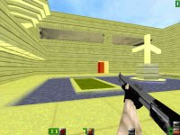

Map name:
Evil Colt Compound
Map author:
Whir
Map filename:
colt_c.zip
Reviewed by:
Bowden;
rattlesnake_316;
SkaMusic;
Nickis;
dev; Bobby_TheRookie; Ronin; Crodge
Review:
Despite the very corny name, Evil Colt Compound is a great, one of the best. Someone FINALLY heeded my statement, and made some great custom textures. My hat is off to Whir, for creating a great map.
Layout -10/10 : This map has a nice and unique layout. The main areas are the outside area, the bathrooms (which are ver nice, love the toilet paper, great touch), and the office type areas. The map flows nice, and seems that it would a blast to play over the net or LAN (keep in mind that this map is being judged only from a walk-through). The weapons placement is excellent. The weapons and ammo are very balanced (and the M4 is hard to get at, which is the way i like it), and there is no one area where most of the weapons and ammo are. You can find ammo and weapons layed out perfectly throughout the map.
Aesthetics (looks) - 9/10 : This map, as well as playing great, looks awesome. The custom textures are a great touch. There's everything from 2 pop machines, great wall and door textures, and toilet/urinal textures too. The only downfall in this area is the outdoors. Two words (no, not s*ck it) - too bright. I like bright areas, but too much is not a good thing.
Gameplay - 9/10 : The r_speeds are great, usually around 300. The only place that they really jumped up was outdoors. I can imagine having some great fights in this map (then why the hell am I writing this instead of playing?), and I imagine that this map should be a virtual shoe in for the next mappack (how about calling it the 'Snakers Cut?).
Overall - 9/10 : Great map, dispite minor flaws. Get cracking on another map Whir! What the hell are you doing still reading this? Download the damn map! Later folks, I'll see ya later, it's been a ball, hehe
-Rattlesnake
Review:
Hey boys 'n' girls! This is my first level review, only I think maybe a few of you know me from the AQ2 message boards. Okay -- here goes.
**Design** -- 9/10
Okay, woulda been a ten, but one thing really made me mad. What was it? A compound, yea. But for what?
I really love levels where I could logically think; "Hmm... My guess is the main hall would be right down here...". This isn't like that. While it's hard to get LOST, some of the rooms are pointless and bland. Room after room, of only pistol clips? Yuck.
On the other hand, some rooms are BEAUTIFUL! There is a gas chamber folks, for you guys who like to get down and dirty. Wait for the poor bastard to go for the M4 -- Lock the door and gas 'im.
**Weapons** -- 10/10
No prob's here. M4 -- that's a stroke of genius. As I said before -- gas chamber is cool. But alas -- does it fit with the level theme? WHAT IS THE LEVEL THEME!?
**Gamepley** -- 10/10
I've played only on a LAN with this so far, so I can't really tell you about lag, but I imagine it should run smooth. No HUGE open areas... this should be fine. Careful outside though... I'm thinkin' lag city out there.
**Looks** -- 8/10
People rave about it's "New great textures". "Not a shade of brown or green". Ugh. No green, no brown, just WHITE AND GREY. Someone needs to start using offwhite or something. That penetrating glowing white hurts my eyes, and adds a cartoon feel.
This is where most people rave, but I think it hurts the level. Sorry Whir!
**Overall** -- 9/10
Smooth. Damn Smooth. While I try and use constructive critisizm in my maps, this is a truely great map. I have not seen any other work from Whir, so when I say this I assume he it is his first map: "Newbie -- 'ya done good."
=P
Teasin' man. Download this folks. Servers aren't really runnin' it as of yet (10/2/98), but dammit, they will! I swear they will!! Thanks for readin' this!
-SkaMusic
Review:
I'm not exactly sure what the "theme" of this map is, but as far as gameplay goes it's outstanding. I've only played this map one on one on a LAN, but that was enough for me to pass judgement - excellent. The gas chamber is really awesome! We've all seen little traps like it before, but this one is unique because there is actually a really good incentive to go into it. There isn't much to the courtyard area but it still makes for decent outside fights. I especially liked the positioning of the weapons, like the shotgun lying on the desk or the M4 in the gas chamber. Ammo is a little on the sparse side but it just makes you think before you shoot. I'd give it a 8.5/10 overall. A beautiful level, very nicely done Whir!
-Nickis
Review:
First things first, this map appears to be some sort of cultist compound (waico, anyone? :)
the Architecture in this map was OK but not great, the textures did all the talking, most of them were great, i really liked the wall textures in the bathrooms, although some were poor, i won't get into too much detail with this, the r_speeds were pretty nice on this map, thus my framerate did not suck.
The gameplay of this level is nice, although i found the level to flow poorly, and found myself running around in circles alot. Weapon placement was absolutely brilliant, the M4 was in a gas chamber that can be locked from the outside and used to trap and kill an unsuspecting player. One of the things i particularly likes about this map was that the doors were wider than in most acton maps, causing less 'getting stuck on the door' situations which can be VERY VERY annoying.
Well, that about sums it up, this is a map i'd recomend all server admins to run, either DM or Teamplay, it runs great in both.
- dev
Review:
To answer Skamusic's question, this map is a Cult Compound, like David Coresh or the Heaven's Gate. The idea is neat and good jumping off point for a killer map.
The level consist of mostly linked rooms and hallways. There is a very neat open courtyard. The rooms range from cluttered (like the room full of those computers, i think) to near empty. Once again, level diversity helps out again. Players of all startegies whether it be knife freak or MP5 ripper will love this map.
DM is great. The ammo is just the right amount. The M4 placement is just a stroke of genius. It's not too hard to get lost and every corner you turn you should be able to find someone to frag or be fragged. Teamplay is also great in this map. The hallways are large enough to accomodate large groups to roam around.
The look of this map has to be it's biggest plus. Custom textures are always a plus in my book and Colt Compound is full of them. The look is bright and cirsp, a far cry from the drap browns of normal quake 2. This adds a lot of character to the level and shows the map makers creative flair.
Colt Compound is one of the best maps to come out for a long time. The look is great but it doesn't sacrifice any gameplay in the process. Download it now, you won't regret it.
-Bobby_TheRookie
Review:
Here is the deal with Whir's map colt. This map is fabulous in appearence and weapons placement (as stated by all other reviewers). Well anyway, I have played this map on both teamplay and deathmatch. I am pleased to say that it does work with teamplay; although, the main design and setting seems better for death match. You can't use the gas chamber in teamplay unless someone is a real idiot! I once gassed one of my own team mates just for the hell of it :-} And you gotta love taking a break and grabbing a cold can of Sudz after a long day of gibbing. Finally, this map's layout works well with it's theme and name... Download it now!
Ratings:
90% graphics and custom textures.
85% weapons and ammo placement.
75% teamplay compatability.
95% deathmatch compatability.
90% r_speeds (based on 300MHz PII, Voodoo2)
87% overall.
Thx-Ronin
Review:
Ok, with this map I'm very torn about how do grade it. I love the theme, with the gas chamber and the weapons placement, but I don't like the layout. Too many rooms look the same, to be able to distinguish between them. This layout seems to be too much of a lot of rooms, instead of individual rooms like in Asylum, which is a great maps. The textures are great, mainly because they are all custom ones, but still they look too bright. In some places I could see through closed doors, which sucks when you shoot at someone and it hits the door and not them, because the door is transparent. This still is a fun map to play, but could've been tested a little bit longer.
Structure and Design -5/10- Really this place is a little too complicated for me. I like it when you can easily tell when you are in a map, just by looking at the room that you're in. I've gotten lost in this map a lot and unless you play big DM games it's hard to find anybody. Also I can't see playing teamplay in this map, because of it's sheer size without that many defineable rooms.
Weapons Layout -9/10- I love the places that the weapons are placed. I also like how ammo isn't so scarce so that you never find it, but so much, so everyone is always loaded with ammo, but the only drawback is the number of grenades in this level. There are lots of them, if you know where they are. I like weapons that aren't out in the open, and a little bit dangerous to get, because it's just a lot cooler that way.
Gameplay -8/10- The only real drawback to this level is that you need to have lots of people playing on the server for it to be enjoyable. Something like 10-12 people would be fine, but don't think about playing a 6 person DM game. I couldn't really see playing Templay on this map, because of it's shear size, with lots of rooms to hide in. Nothing is worse than watching two people trying to find each other on a huge map. At least on blockwar you can play hold the hotel where every body rushes the hotel and tries to control it. This place just doesn't have the outside openness to have attacks on certain rooms like in blockwar.
Textures -6/10- I give the mapmaker full marks for trying to make his own textures, but they look a little cartoony and "unrealistic to me" This may just be due to my low resolution, but the textures don't look that good. I still give him credit for trying since these textures work a lot better than any of the Quake2 textures do in this type of setting.
Overall -8/10- This is a fun map to play, but still has minor errors, as listed above. I love the idea of this map, and encourage the mapmaker not to take this to total offense, because this is one of the better maps out there. I'm just offering a little bit of constructive critisism, so people can make even better maps in the future. -
- Crodge